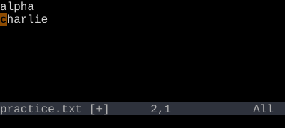

Undo and Redo
u to undo. Ctrl-R to redo. You cannot lose work.
u undoes the last change. Ctrl-R redoes it. Vim's undo is a tree, not a stack — you literally cannot lose work.
Vim is safe. Whatever you just did, you can undo. Whatever you just undid, you can redo. There is no "oh no" key — only u.
| Key | Note |
|---|---|
| u |
| Key | Note |
|---|---|
| Ctrl-R |
Press u repeatedly to undo further. Press Ctrl-R repeatedly to redo. Counts work too: 5u undoes the last five changes.
U — undo the line
U (capital) is a less-common command: it undoes all changes on the current line since you last moved off it. Useful occasionally; the regular u is what you'll use 99% of the time.
Reference
| Key | Action |
|---|---|
| u | Undo last change |
| Ctrl-R | Redo last undone change |
| U | Undo all changes on the current line |
| {n}u | Undo last n changes |
| g- | Earlier in time (across branches) |
| g+ | Later in time |
| :earlier {N}m | Jump back N minutes |
| :later {N}s | Jump forward N seconds |
Worked example — u and Ctrl-R
Undo, then redo.



Undo and redo navigate the change history. Vim keeps a tree, not just a stack — see undo-tree.
See also: Undo as a Tree, Repeat Last Change, Open, Save, Quit